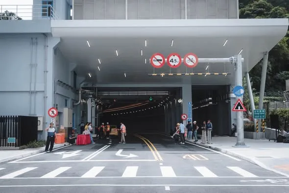

蔣萬安chiangwanan

月圓人團圓，中秋節是最適合和家人、朋友相聚的日子。 節慶期間，城市的運作不會停下腳步。謝謝持續堅守崗位的警消、醫護、交通、清潔，以及所有第一線夥伴，守護城市安全，讓市民朋友安心過節。 也歡迎大家趁著佳節，走進臺北的大街小巷，感受節慶氣氛。 祝福大家中秋愉快、闔家平安！🌕
Accounts
| 平台 | 帳號 | 已收錄貼文 | 最後更新 |
|---|---|---|---|
| https://www.facebook.com/chiangwanan/ | 60 | 2026-09-25 09:06 | |
| https://www.instagram.com/wanan.chiang/ | 38 | 2026-09-24 21:20 | |
| YouTube | https://www.youtube.com/channel/UC9EWrkZoT3agfx45s6FdVtQ | 16 | 2026-07-16 14:51 |
| LINE 官方帳號 | https://page.line.me/eso5326z | 0 | — |
| X | https://x.com/WananChiang | 0 | — |
Timeline
顯示 114 / 114 則
月圓人團圓，中秋節是最適合和家人、朋友相聚的日子。 節慶期間，城市的運作不會停下腳步。謝謝持續堅守崗位的警消、醫護、交通、清潔，以及所有第一線夥伴，守護城市安全，讓市民朋友安心過節。 也歡迎大家趁著佳節，走進臺北的大街小巷，感受節慶氣氛。 祝福大家中秋愉快、闔家平安！🌕

臺北文化小旅行 梵谷現身臺北街頭！ 臺北的魅力，不只在熱鬧的商圈、高聳的建築和嶄新的地標。 走進街頭巷尾，就能從一棟老建築、一條老街道，看見這座城市累積多年的歷史記憶與文化故事。 臺北也是一座多元開放的城市，匯聚了來自世界各地的藝術與創新。 我們首度將臺北文化小旅行與梵谷結合，讓藝術走出美術館、走進城市日常。在北藝、北流、松菸以及北投中心新村等地，一轉身就能看到梵谷的經典作品，也感受到臺北豐富的文化景色。 我們會持續推動臺北文化小旅行，也邀請大家放慢腳步，在臺北找到屬於自己旅行的意義。 Graphic animation : @theboogley

昨晚，我和 侯友宜市長、 李四川Hammer Lee一起見證川端橋修復完工、正式啟用。 1937年啟用的川端橋，因連接當時臺北市的「川端町」而得名，是全臺現存歷史最悠久，也是唯一保有日本時代舊結構的大型跨縣市聯外橋梁，承載了雙北市民的共同記憶。 修復川端橋，是一條困難、卻更有意義的路。 雙北克服了工程技術挑戰，完整保留當年的雙柱式拱型橋墩與日本時期鋼梁，兼顧防洪、耐震與永續需求，轉型為行人與自行車專用的景觀橋梁，讓交通回歸以人為本。 走到橋的另一端，串起臺北城南的紀州庵文學森林與永和的楊三郎美術館。大家可以沿著新店溪，來一趟雙北藝文小旅行，感受河岸兩邊的歷史風華。 此外，配合周邊中正河濱公園的高空景觀橋、景觀塔及 #川端落霞廣場觀景平台 ，也預計在今年底完工，打造更優質的親水休憩空間。 感謝侯市長與新北市府團隊攜手合作；也要謝謝曾任臺北市、新北市副市長的川伯，一路以來親自督導川端橋修復工程。熟悉雙北、工程專業的他，也成為兩座城市之間的「第三條橋」，讓這次修復工程更具意義。 未來，臺北市和新北市會繼續攜手努力，打造好的建設、照顧市民朋友，讓雙北持續共榮、共治、共好。
川流不息，有志一同！ 謝謝港都的熱情，謝謝高雄的鄉親，我們繼續向前！

依法代拆、突破僵局，文山木柵公辦都更完工！ 今天早上，我回到熟悉的文山區，視察「文山木柵段公辦都更案」完工情形。看著眼前嶄新的建築，我想起2023年，上任不到三個月時，市府面對的那個艱難決定。 都更最困難的，往往是漫長的溝通與整合。 只要還有一、兩間不同意戶，不願意搬遷，整個案件就可能無限期延宕，多數住戶也只能繼續等待。依法代拆，從來不是一個容易的決定；但政府不能因為困難就停在原地，更不能讓願意配合、等待多年的住戶，遲遲看不到家園重建的那一天。 這是2019年《都市更新條例》修法後，臺北市首例執行代拆的案件，也是目前規模最大的公辦都更案。 當時，臺北隊在不到三個月內整合跨局處資源，反覆模擬各種突發狀況及應變措施，在保障住戶權益、恪守法定程序的前提下，依法完成代拆，突破都更最艱難的一關，也讓停滯多年的案件重新向前。 如今，這項公辦都更案順利完工，市府分回的282戶將全數作為 #幸福住宅，照顧育兒家庭與新婚夫妻，幫助更多年輕人減輕居住負擔，在臺北安心成家、安心育兒。 臺北已經邁入大都更時代。 過去3年的都更報核案件數，已達前8年的2.4倍，而臺北隊推動都更的腳步不會停止。 未來，我們會繼續突破難關，讓更多老舊社區迎來新生，讓市民住得更安全、更安心。 該做的事，勇敢去做； 對的事情，堅持到底。

臺北市「育兒減少工時」計畫上路半年，很高興看到中央宣布跟進，讓這項政策從臺北出發、擴及全國，幫助更多家長兼顧工作與家庭。 上週五，我親自拜訪臺北市進出口商業同業公會（IEAT）及世雅育樂股份有限公司（SEGA），和企業及員工面對面交流，了解政策上路後的實際情形，也傾聽第一線的建議，作為未來持續優化的方向。 一項政策有沒有幫助，最真實的答案，就在每個市民的日常裡。 在IEAT，一位爸爸和我分享，他平時負責準備家中晚餐。現在提早一小時下班，不必再擔心尖峰時段交通，可以從容地到黃昏市場買菜、回家煮晚餐，陪家人一起吃飯。多出來的一小時，讓他有更充裕的時間兼顧工作與家庭。 在SEGA，一位媽媽告訴我，家裡是雙薪家庭，也沒有阿公阿嬤幫忙。現在她能提早接孩子放學，也有時間處理家中大小事，不再一路趕、一直催。自己的心情放鬆了，陪伴孩子的時間，也更有品質。 這些日常的生活改變，正是我們推動「育兒減少工時」最重要的意義。 截至今年6月，已有480家企業響應、近900名員工受惠，也獲得許多正面回饋。明年度，我們將持續擴大辦理，讓好的政策擴及更多育兒家庭。 從我上任以來，臺北市陸續推動多項全國首創的育兒友善政策。我們會持續努力，從家庭真正需要的地方出發，全方位支持婚育家庭，成為家長最堅實的後盾。
守護校園食安，是我們一直以來最重視的。 針對今日成淵高中國中部多名學生腹瀉情形，我在第一時間要求市府團隊積極介入處理。現在最重要的，就是把孩子的健康照顧好、盡快查清楚原因，也讓家長清楚掌握最新情況。 目前市府從學生健康、採檢調查到供餐處置同步進行，我也要求相關局處加快速度、持續追蹤。 一、勒令停業、廠商解約 教育局、衛生局接獲通報後，第一時間進校督導、稽查並採樣送驗。 衛生局已依法勒令業者停業。今日稽查發現5項缺失，要求限期改善，最重可罰2億元。 教育局要求學校終止契約，撤換供餐廠商。孩子的食安，沒有妥協空間。 二、 加速採驗確認 、備援供餐不中斷 熱食部已全面清消，由備援業者接手國中部午餐供應。不能影響孩子每天正常吃飯、上課，我要求替代餐點的安全與衛生一樣要嚴格把關。 目前午餐留樣檢體已經送驗，也同步進行疫調、查核及相關檢體採驗，盡快把原因查清楚。 三、公衛介入、追蹤學生健康 市府已成立府級專案小組，專案追蹤學生的健康及後續情況，即時提供必要的醫療協助與關懷。 校方也已完成學生造冊並進行分級追蹤，持續與家長保持聯繫，掌握每一位孩子的身體狀況，確保都獲得妥善照顧。 四、擴大抽查、強化通報 擴大臺北市校園食安抽查，針對全市中小學團膳業者及校內熱食部，加強無預警衛生稽查，從食材、環境到製作流程全面把關。 同時，重新檢視食材採購、驗收及製程規範，強化異常情形的現場檢查及通報機制，及早發現問題、即時處理風險。 從這起事件的處理，到全市校園的供餐管理，我要求市府團隊把每一個環節確實顧好，讓孩子安心吃飯、也讓家長放心。

每一則新聞的背後，都有記者朋友辛苦奔波的身影。 不論風吹日曬、趕場追新聞，訪問一結束，接著趕稿、剪帶，為的就是帶給大家臺北的第一手消息。 謝謝記者朋友，今天是屬於你們的日子，辛苦了！ 記者節快樂！🎤

臺北捷運 #信義線東延段 正式通車！🚇 今天下午，首班列車從全新的「廣慈/奉天宮站」出發。 對許多住在信義區東側的市民朋友來說，這一天期待已久。從今天開始，捷運來到家門口，也讓通勤、洽公、育兒、休閒，都多了一個更方便的選擇。 這 1.4 公里，為臺北帶來五個重要改變： 一、捷運路網擴大至信義區東側 福德街周邊居民不必再搭公車到象山、永春轉乘，從廣慈/奉天宮站上車，即可直達臺北101、大安森林公園、臺北車站、士林、北投、淡水。 二、通勤時間更穩定 信義區東側居民多了一個不受路面交通影響的公共運輸選擇，上下班時間也更好掌握。 三、完善在地生活圈 串聯廣慈博愛園區、信義區行政中心，讓長輩、身心障礙朋友及育兒家庭洽公、使用社福資源時，少走一段路、少一次轉乘。 四、帶動地方繁榮 串聯奉天宮、在地商圈、市場及親山步道，讓更多人走進信義區東側，也為地方帶來更多人流與商機。 五、「臺北捷運六線齊發 2.0」持續推進 信義線東延段通車後，萬大線一期、南北環段、東環段也將接力推進，持續完善捷運路網，改善內湖及整體市區交通。 信義線東延段被稱為「史上最難捷運工程」。 一路走來，工程團隊克服複雜地質、狹窄施工空間等重重挑戰。短短 1.4 公里，背後是10 年的努力。 今天終於能把這座車站交給市民朋友，這份成果是大家共同努力的結果。謝謝歷任市長、市府團隊、捷運工程團隊及北捷公司，也謝謝在地民意代表、里長和居民，這些年來對施工的支持與體諒。 今年適逢臺北捷運通車 30 週年，我們用信義線東延段，再寫下新的歷史一頁。 等了10 年，歡迎大家一起來搭車！🚇

倒數3天！ 北捷信義線東延段8/30即將通車🚇 今天，我再次來到全新的 「廣慈/奉天宮站」，沿著未來大家實際乘車的動線，從車站標示、收票閘門、電扶梯、電梯，到月臺號誌、廣播、廁所、照明，逐一檢視通車前的準備情況。 我們也同步視察站外的交通標線、YouBike、公車候車亭等設施，就是希望讓大家的乘車體驗更加順暢。 我也特別提醒團隊，要從尖峰時段的人潮，以及乘客們的使用需求來設想，包含長輩、身障朋友，以及推著娃娃車的家長和兒童，盡可能把每個細節都考慮周全。 信義線東延段長1.4公里，被稱為「捷運史上工程最艱難」的捷運路段。一路克服複雜地質與深層開挖等挑戰，工程團隊走到今天真的很不容易。 8月30日，期待和大家一起迎接信義線東延段正式通車！

中秋連假前，來和 #環南市場 好朋友們問早！ 中秋節前正是市場忙碌備貨的時候。 今天一大早，我特別來到環南市場，感謝大家的辛苦付出，也跟老朋友們見面敘舊，持續傾聽大家的需求。 環南市場從去年完成改建後，整體環境更加舒適，民眾採買動線也更加完善，成為全臺市場轉型的新典範！ 我上任後，也解除市場「一戶一攤」限制，讓攤商經營更有彈性，預計明年就能上路。 另外，我們也持續增加針對各傳統市場的行銷及精進預算，讓更多市民及觀光客走進傳統市場。 中秋連假前，感謝每一位市場夥伴的辛苦付出 臺北隊也會持續和大家一起努力！

臺北文化小旅行 梵谷現身臺北街頭！ 臺北的魅力，不只在熱鬧的商圈、高聳的建築和嶄新的地標。 走進街頭巷尾，就能從一棟老建築、一條老街道，看見這座城市累積多年的歷史記憶與文化故事。 臺北也是一座多元開放的城市，匯聚了來自世界各地的藝術與創新。 我們首度將臺北文化小旅行與梵谷結合，讓藝術走出美術館、走進城市日常。在北藝、北流、松菸以及北投中心新村等地，一轉身就能看到梵谷的經典作品，也感受到臺北豐富的文化景色。 我們會持續推動臺北文化小旅行，也邀請大家放慢腳步，在臺北找到屬於自己旅行的意義。

南港生技隧道 9/28即將通車！ 這不只是一條隧道，更是為城市交通問題提出的解方。 過去，從南港車站到國家生技研究園區，上下班尖峰時段經常壅塞。 9月28日，隨著南港生技隧道、生技路正式通車，原本尖峰需花費15-20分鐘的路程，未來只需要5分鐘就能抵達！ 為了落實「人本交通」，我們更全國首創在隧道內規劃寬達4公尺獨立的行人與自行車空間，與車流分隔，讓市民不論騎自行車或步行，都能更加安全、舒適。 災害來臨時，南港生技隧道能作為替代道路，支援緊急救災、救護需求，在改善日常交通的同時，進一步提升城市韌性。 南港生技隧道通車後，不只解決居民面對的交通問題，也將在地生活圈、產業園區與南港車站完整串接，讓南港的交通路網更加便利、完善。 臺北隊會持續推動有感建設，解決市民遇到的問題。 把市政做好，是我們始終堅持走的路。

人本交通，走進臺北的日常 前幾天，我來到師大生活圈，實地視察 #行人友善區 的推動成果。 過去，這裡長期面臨人車爭道、行人空間不足、車速過快等問題。擔任立委時，我曾和在地里長一起站在路口，觀察人車通行的情形，討論道路該怎麼調整，才能讓居民走得更安心。 上任後，臺北隊持續走進街區、傾聽地方聲音。 去年2月，我到現場聽取里長及居民的意見；同時，也參考國外經驗，從行人的角度重新思考道路空間。從改善標線、調整動線，到導入創新措施，一步一步解決長期存在的問題。 隨著今年7月，古風里行人友善區正式完工，也為整個師大生活圈行人友善區拼上最後一塊拼圖。這次再次回到現場，我也實際走了一遍，了解改善後的使用情形，以及居民最真實的感受。 除了改善步行環境，我們也持續串聯綠色運具。 我上任後恢復YouBike前30分鐘免費，政策上路以來，使用量成長67%、滿意度達94.7%，累積租借次數也將在這個月底突破5億次。 對許多市民來說，YouBike不只是一輛自行車，更是上班、上學、買菜或轉乘大眾運輸時，最方便的「最後一哩路」。 很高興師大生活圈的改善不只獲得在地居民肯定，更吸引臺北許多里、甚至外縣市也到訪觀摩、交流。 好的改變，可以從一個街區開始，逐步成為整座城市的日常。 臺北市會持續推動人本交通，讓城市的每一段路，都更安全、更便利，也更有人情味。

依法代拆、突破僵局，文山木柵公辦都更完工！ 今天早上，我回到熟悉的文山區，視察「文山木柵段公辦都更案」完工情形。看著眼前嶄新的建築，我想起2023年，上任不到三個月時，市府面對的那個艱難決定。 都更最困難的，往往是漫長的溝通與整合。 只要還有一、兩間不同意戶，不願意搬遷，整個案件就可能無限期延宕，多數住戶也只能繼續等待。依法代拆，從來不是一個容易的決定；但政府不能因為困難就停在原地，更不能讓願意配合、等待多年的住戶，遲遲看不到家園重建的那一天。 這是2019年《都市更新條例》修法後，臺北市首例執行代拆的案件，也是目前規模最大的公辦都更案。 當時，臺北隊在不到三個月內整合跨局處資源，反覆模擬各種突發狀況及應變措施，在保障住戶權益、恪守法定程序的前提下，依法完成代拆，突破都更最艱難的一關，也讓停滯多年的案件重新向前。 如今，這項公辦都更案順利完工，市府分回的282戶將全數作為 #幸福住宅，照顧育兒家庭與新婚夫妻，幫助更多年輕人減輕居住負擔，在臺北安心成家、安心育兒。 臺北已經邁入大都更時代。 過去3年的都更報核案件數，已達前8年的2.4倍，而臺北隊推動都更的腳步不會停止。 未來，我們會繼續突破難關，讓更多老舊社區迎來新生，讓市民住得更安全、更安心。 該做的事，勇敢去做； 對的事情，堅持到底。
市民朋友晚安 今天下午，中山區民權東路二段92巷1弄一棟兩層樓建築發生地層下陷。 我在議會市政總質詢期間接獲通報，立即指示消防局成立前進指揮所，總質詢一結束，我也立刻趕赴現場。 第一時間，我要求消防局、警察局、產業局、都發局、建管處、北水處、中山區公所，以及台電、台北瓦斯公司與專業技師都派員到場，全面掌握現場狀況，確保市民安全。 經土木、大地、結構技師現場評估，房屋主要結構未受破壞，沒有立即危險。但為了確保安全，市府仍預防性疏散4位民眾，其中1位有安置需求，已由市府妥善安排。 建管處第一時間勒令工地全面停工，依法對承造人及監造人各處最重罰鍰；同時，也進行灌漿回填作業，防止情況擴大，預計今晚完成；後續將由專業人員持續監測並全面檢視，確認建築及周邊環境安全無虞。 針對受影響住戶，市府會協助後續求償、提供必要的法律支援，並持續追究相關責任，保障住戶權益。 市府團隊會持續掌握現場狀況、嚴格把關，全力確保周邊住戶與市民安全。

九三軍人節 向國軍英雄致敬🫡 軍人節前夕，我再次來到忠烈祠主持秋祭典禮。 唯有銘記歷史、感念先賢，才能守護今日得來不易的自由民主。 向所有為中華民國犧牲奉獻的先賢先烈，以及每一位堅守崗位、保家衛國的國軍弟兄姊妹，致上最崇高的敬意。 國軍英雄辛苦了，永遠以你們為榮。
保護好每一個孩子，讓孩子安心長大，是我們最重要的責任，制度之間可能出現的空隙，我們希望再往前一步，把它補起來。 現行全國一致的兒少保護機制，依照行為人身分區分「家內」與「家外」，對應的風險評估、處遇方式也有所不同。但實際生活中，有些人雖然不是家人、沒有同住，卻經常出入家裡，跟家庭關係密切。 依照現行標準，這些人會被歸類為「家外人士」，不適用SDM安全評估，但我們從實際案件中看到，對孩子來說，風險不會因為一個人被歸類為「家外」，就真的離家很遠。 在臺北，我們決定主動往前多做一步。 「類家內成員納入SDM安全評估」 未來，這些與孩子、家庭密切接觸的「類家內成員」，我們會直接納入SDM安全評估。不只看身分，更要看他實際和孩子有多近、與家庭互動有多深，把可能的風險看得更仔細。 「強化第二道防線」 面對孩子的安全，我們希望重要的判斷，都能多一雙專業的眼睛再看一遍。 未來，除了第一線社工與督導，也將加入外部專業複核及跨網絡共同檢視。多一個專業的人一起判斷，多一次討論就多一道保障。 「短期家庭式庇護處所」 當孩子需要暫時離開原本的環境，但是否安置仍需要進一步評估時，我們會增設短期家庭式庇護處所，讓孩子與家庭先有一個安全的地方落腳。 不讓需要幫助的家庭，在最需要支持的時候無處可去，也讓安置資源能留給真正需要長期照顧的孩子。 「對第一線社工更多支持」 要保護好孩子，也要支持每天站在第一線、陪在孩子身邊的人。 第一線社工、安置機構照顧人員，面對的是一個又一個真實的家庭和孩子。這些工作很辛苦，需要專業以及很大的耐心。 我們不只要求制度做得更好，也要給第一線更實際的支持。 接下來，臺北會充實安置機構夜間照顧人力、重新檢討薪資與人力條件，也持續推動久任獎助。希望讓願意留下來照顧孩子的人，有更好的工作環境，也有更多力量陪孩子走得更久。 兒少保護，沒有哪一天可以說「這樣就夠了」。 我們每一天都要重新檢視，還有哪些地方可以做得更好。 能補上的地方，我們努力補上；能再多一道保障，我們就多努力做一道。 希望每一個孩子，都能被好好保護，在最需要幫忙的時候，都有人能接住。
對於孩子遭遇這樣的事情，我和所有關心孩子的人一樣，感到非常心痛與不捨。對我來說，孩子的安全永遠是最優先的考量，每一個孩子，都應該在被好好照顧、被好好保護的環境中長大。 目前孩子已經獲得安置。現在最重要的，是讓孩子能夠安心生活、慢慢復原、平安長大。 去年底市府接獲通報後，社工與專業機構立即介入、執行安全計畫並進行安全評估，家防中心、社會局、警察局等單位也持續投入訪視、面談、輔導及相關課程，接獲通報240天以來累計提供714次服務。目的就是要確保孩子不再受到傷害，同時在專業評估下，盡可能採取對孩子衝擊最小、最符合孩子最佳利益的處遇方式，一步一步陪著孩子走向穩定，給孩子復原所需要的時間與空間。 兒少保護制度永遠可以做得更好。面對每一個孩子，我們不只要確認「有沒有按照制度做」，更要持續思考制度是不是還有不足，保護網是不是還能更緊密。 這些問題，我們不會迴避，只要還有能做得更好的地方，我們會繼續檢視、持續努力。 市府的責任，是成為第一線最有力的後盾。這四年來，我們持續強化社政、教育、警政的橫向合作，建立跨局處兒少保護機制，希望更即時介入；我們也把保護工作向前延伸，從親職教育、家庭支持，到防範網路誘騙等，希望在傷害發生以前，能多一分預防、多一層保護。 如果孩子真的必須離開原生家庭，我們也認同「去機構化」的理念，持續增加寄養家庭、團體家庭等資源，依照每個孩子不同的身心狀況與需求，結合醫療、心理、教育等專業，找到更適合、更穩定的照顧環境。 同時，我也要謝謝所有站在第一線的社工與專業人員。 要保護孩子，也要撐住保護孩子的人。兒少保護工作非常不容易，每一次訪視、每一次面談、每一次評估，都必須在複雜的家庭關係與風險情境中做出專業判斷。 我們會持續與第一線人員並肩作戰，提升社工的待遇、改善工作環境，提供留任獎勵、心理諮商及涉訟協助，讓第一線同仁在守護孩子的同時，也有足夠的支持與後盾。 我們也會持續陪伴、持續關心，提供孩子及第一線專業人員需要的支持與協助。市府團隊會努力，把保護網織得更密、更牢。

倒數3天！ 北捷信義線東延段8/30即將通車🚇 今天，我再次來到全新的 「廣慈/奉天宮站」，沿著未來大家實際乘車的動線，從車站標示、收票閘門、電扶梯、電梯，到月臺號誌、廣播、廁所、照明，逐一檢視通車前的準備情況。 我們也同步視察站外的交通標線、YouBike、公車候車亭等設施，就是希望讓大家的乘車體驗更加順暢。 我也特別提醒團隊，要從尖峰時段的人潮，以及乘客們的使用需求來設想，包含長輩、身障朋友，以及推著娃娃車的家長和兒童，盡可能把每個細節都考慮周全。 信義線東延段長1.4公里，被稱為「捷運史上工程最艱難」的捷運路段。一路克服複雜地質與深層開挖等挑戰，工程團隊走到今天真的很不容易。 8月30日，期待和大家一起迎接信義線東延段正式通車！

中秋連假前，來和 #環南市場 好朋友們問早！ 中秋節前正是市場忙碌備貨的時候。 今天一大早，我特別來到環南市場，感謝大家的辛苦付出，也跟老朋友們見面敘舊，持續傾聽大家的需求。 環南市場從去年完成改建後，整體環境更加舒適，民眾採買動線也更加完善，成為全臺市場轉型的新典範！ 我上任後，也解除市場「一戶一攤」限制，讓攤商經營更有彈性，預計明年就能上路。 另外，我們也持續增加針對各傳統市場的行銷及精進預算，讓更多市民及觀光客走進傳統市場。 中秋連假前，感謝每一位市場夥伴的辛苦付出 臺北隊也會持續和大家一起努力！

昨晚，我和侯友宜 @hou.yuih 市長、李四川川伯 @hammer__lee 一起見證川端橋修復完工、正式啟用。 1937年啟用的川端橋，因連接當時臺北市的「川端町」而得名，是全臺現存歷史最悠久，也是唯一保有日本時代舊結構的大型跨縣市聯外橋梁，承載了雙北市民的共同記憶。 修復川端橋，是一條困難、卻更有意義的路。 雙北克服了工程技術挑戰，完整保留當年的雙柱式拱型橋墩與日本時期鋼梁，兼顧防洪、耐震與永續需求，轉型為行人與自行車專用的景觀橋梁，讓交通回歸以人為本。 走到橋的另一端，串起臺北城南的紀州庵文學森林與永和的楊三郎美術館。大家可以沿著新店溪，來一趟雙北藝文小旅行，感受河岸兩邊的歷史風華。 此外，配合周邊中正河濱公園的高空景觀橋、景觀塔及 #川端落霞廣場觀景平台 ，也預計在今年底完工，打造更優質的親水休憩空間。 感謝侯市長與新北市府團隊攜手合作；也要謝謝曾任臺北市、新北市副市長的川伯，一路以來親自督導川端橋修復工程。熟悉雙北、工程專業的他，也成為兩座城市之間的「第三條橋」，讓這次修復工程更具意義。 未來，臺北市和新北市會繼續攜手努力，打造好的建設、照顧市民朋友，讓雙北持續共榮、共治、共好。

南港生技隧道 9/28即將通車！ 這不只是一條隧道，更是為城市交通問題提出的解方。 過去，從南港車站到國家生技研究園區，上下班尖峰時段經常壅塞。 9月28日，隨著南港生技隧道、生技路正式通車，原本尖峰需花費15-20分鐘的路程，未來只需要5分鐘就能抵達！ 為了落實「人本交通」，我們更全國首創在隧道內規劃寬達4公尺獨立的行人與自行車空間，與車流分隔，讓市民不論騎自行車或步行，都能更加安全、舒適。 災害來臨時，南港生技隧道能作為替代道路，支援緊急救災、救護需求，在改善日常交通的同時，進一步提升城市韌性。 南港生技隧道通車後，不只解決居民面對的交通問題，也將在地生活圈、產業園區與南港車站完整串接，讓南港的交通路網更加便利、完善。 臺北隊會持續推動有感建設，解決市民遇到的問題。 把市政做好，是我們始終堅持走的路。

人本交通，走進臺北的日常 前幾天，我來到師大生活圈，實地視察 #行人友善區 的推動成果。 過去，這裡長期面臨人車爭道、行人空間不足、車速過快等問題。擔任立委時，我曾和在地里長一起站在路口，觀察人車通行的情形，討論道路該怎麼調整，才能讓居民走得更安心。 上任後，臺北隊持續走進街區、傾聽地方聲音。 去年2月，我到現場聽取里長及居民的意見；同時，也參考國外經驗，從行人的角度重新思考道路空間。從改善標線、調整動線，到導入創新措施，一步一步解決長期存在的問題。 隨著今年7月，古風里行人友善區正式完工，也為整個師大生活圈行人友善區拼上最後一塊拼圖。這次再次回到現場，我也實際走了一遍，了解改善後的使用情形，以及居民最真實的感受。 除了改善步行環境，我們也持續串聯綠色運具。 我上任後恢復YouBike前30分鐘免費，政策上路以來，使用量成長67%、滿意度達94.7%，累積租借次數也將在這個月底突破5億次。 對許多市民來說，YouBike不只是一輛自行車，更是上班、上學、買菜或轉乘大眾運輸時，最方便的「最後一哩路」。 很高興師大生活圈的改善不只獲得在地居民肯定，更吸引臺北許多里、甚至外縣市也到訪觀摩、交流。 好的改變，可以從一個街區開始，逐步成為整座城市的日常。 臺北市會持續推動人本交通，讓城市的每一段路，都更安全、更便利，也更有人情味。

臺北市 #育兒減少工時 計畫上路半年，很高興看到中央宣布跟進，讓這項政策從臺北出發、擴及全國，幫助更多家長兼顧工作與家庭。 上週五，我親自拜訪臺北市進出口商業同業公會（IEAT）及世雅育樂股份有限公司（SEGA），和企業及員工面對面交流，了解政策上路後的實際情形，也傾聽第一線的建議，作為未來持續優化的方向。 一項政策有沒有幫助，最真實的答案，就在每個市民的日常裡。 在IEAT，一位爸爸和我分享，他平時負責準備家中晚餐。現在提早一小時下班，不必再擔心尖峰時段交通，可以從容地到黃昏市場買菜、回家煮晚餐，陪家人一起吃飯。多出來的一小時，讓他有更充裕的時間兼顧工作與家庭。 在SEGA，一位媽媽告訴我，家裡是雙薪家庭，也沒有阿公阿嬤幫忙。現在她能提早接孩子放學，也有時間處理家中大小事，不再一路趕、一直催。自己的心情放鬆了，陪伴孩子的時間，也更有品質。 這些日常的生活改變，正是我們推動「育兒減少工時」最重要的意義。 截至今年6月，已有480家企業響應、近900名員工受惠，也獲得許多正面回饋。明年度，我們將持續擴大辦理，讓好的政策擴及更多育兒家庭。 從我上任以來，臺北市陸續推動多項全國首創的育兒友善政策。我們會持續努力，從家庭真正需要的地方出發，全方位支持婚育家庭，成為家長最堅實的後盾。
守護校園食安，是我們一直以來最重視的。 針對今日成淵高中國中部多名學生腹瀉情形，我在第一時間要求市府團隊積極介入處理。現在最重要的，就是把孩子的健康照顧好、盡快查清楚原因，也讓家長清楚掌握最新情況。 目前市府從學生健康、採檢調查到供餐處置同步進行，我也要求相關局處加快速度、持續追蹤。 一、勒令停業、廠商解約 教育局、衛生局接獲通報後，第一時間進校督導、稽查並採樣送驗。 衛生局已依法勒令業者停業。今日稽查發現5項缺失，要求限期改善，最重可罰2億元。 教育局要求學校終止契約，撤換供餐廠商。孩子的食安，沒有妥協空間。 二、 加速採驗確認 、備援供餐不中斷 熱食部已全面清消，由備援業者接手國中部午餐供應。不能影響孩子每天正常吃飯、上課，我要求替代餐點的安全與衛生一樣要嚴格把關。 目前午餐留樣檢體已經送驗，也同步進行疫調、查核及相關檢體採驗，盡快把原因查清楚。 三、公衛介入、追蹤學生健康 市府已成立府級專案小組，專案追蹤學生的健康及後續情況，即時提供必要的醫療協助與關懷。 校方也已完成學生造冊並進行分級追蹤，持續與家長保持聯繫，掌握每一位孩子的身體狀況，確保都獲得妥善照顧。 四、擴大抽查、強化通報 擴大臺北市校園食安抽查，針對全市中小學團膳業者及校內熱食部，加強無預警衛生稽查，從食材、環境到製作流程全面把關。 同時，重新檢視食材採購、驗收及製程規範，強化異常情形的現場檢查及通報機制，及早發現問題、即時處理風險。 從這起事件的處理，到全市校園的供餐管理，我要求市府團隊把每一個環節確實顧好，讓孩子安心吃飯、也讓家長放心。
得立跟所有參加交換學生計畫的孩子一樣，依照公開的規定提出申請、經過正式的甄選程序。我從頭到尾都沒有介入甄選。 大家關心他的申請以及赴美資格，教育局也已經說明得很清楚。得立是臺灣人，是中華民國國民，在臺北一路從國小、國中、參加會考，這次的計畫申請，符合資格，符合規定，符合程序。他沒有因為是誰的兒子，而有任何特殊待遇。 得立憑自己的努力申請上這個計劃，我以他為榮。 至於教育局的相關補助，我和太太、得立共同討論之後，決定不領取。 政治人物本來就應該接受最嚴格的檢驗，我也願意接受所有的檢驗。但是，我希望不要因為得立的父親是臺北市長，就讓一個孩子因此必須放棄追求夢想的權利。 得立決定休學一年，去看看世界。看到一個15歲的孩子，有獨立探索的心與勇氣，我和舫亘的態度就是尊重與支持。 我踏上從政之路，成為公眾人物，是我的選擇，不是得立的選擇。而得立的所有選擇，做父母的永遠都會尊重、支持。

臺北捷運 #信義線東延段 正式通車！🚇 今天下午，首班列車從全新的「廣慈/奉天宮站」出發。 對許多住在信義區東側的市民朋友來說，這一天期待已久。從今天開始，捷運來到家門口，也讓通勤、洽公、育兒、休閒，都多了一個更方便的選擇。 這 1.4 公里，為臺北帶來五個重要改變： 一、捷運路網擴大至信義區東側 福德街周邊居民不必再搭公車到象山、永春轉乘，從廣慈/奉天宮站上車，即可直達臺北101、大安森林公園、臺北車站、士林、北投、淡水。 二、通勤時間更穩定 信義區東側居民多了一個不受路面交通影響的公共運輸選擇，上下班時間也更好掌握。 三、完善在地生活圈 串聯廣慈博愛園區、信義區行政中心，讓長輩、身心障礙朋友及育兒家庭洽公、使用社福資源時，少走一段路、少一次轉乘。 四、帶動地方繁榮 串聯奉天宮、在地商圈、市場及親山步道，讓更多人走進信義區東側，也為地方帶來更多人流與商機。 五、「臺北捷運六線齊發 2.0」持續推進 信義線東延段通車後，萬大線一期、南北環段、東環段也將接力推進，持續完善捷運路網，改善內湖及整體市區交通。 信義線東延段被稱為「史上最難捷運工程」。 一路走來，工程團隊克服複雜地質、狹窄施工空間等重重挑戰。短短 1.4 公里，背後是10 年的努力。 今天終於能把這座車站交給市民朋友，這份成果是大家共同努力的結果。謝謝歷任市長、市府團隊、捷運工程團隊及北捷公司，也謝謝在地民意代表、里長和居民，這些年來對施工的支持與體諒。 今年適逢臺北捷運通車 30 週年，我們用信義線東延段，再寫下新的歷史一頁。 等了10 年，歡迎大家一起來搭車！🚇

市民朋友早安！ 今天早上，我到議會進行專案報告。 針對高齡友善居住規劃、社宅基地盤點與進度、遮陽降溫與防洪韌性、聯外交通長期規劃、公車行車安全與自動駕駛等議題，向全體市民及議員說明市府的精進作為與施政方向。 歡迎加入直播，一起關心臺北市！

陪指南宮走過火災，直到重建的那一天。 我在政大念書的時候，就常常到指南宮。這裡承載著我很多求學時期的回憶；成家之後，也常帶著太太、孩子和家人來走走、參拜。 我相信，對許多市民朋友和信眾來說，指南宮不只是一座廟宇，更是一份共同的記憶。每年的三獻大典是地方盛事，許多國內外宗教團體與重要人士也都會齊聚在這裡。指南宮更是臺北最具指標性的廟宇之一，也是全臺灣呂仙祖信仰的重鎮。 昨天發生火災，所幸沒有造成人員傷亡，是不幸中的大幸。消防局接獲通報後，第一時間投入救災，總計動員超過106人次、27輛消防車，也有義消夥伴及無人機隊共同協助掌握火勢，最終在凌晨12時09分將火勢撲滅。 我要再次感謝所有奮勇救災的消防弟兄及義消夥伴。 今天一早，我到現場和高超文主委、廟方及市府相關單位討論後，也做出幾項指示。 第一，臺北市政府立即成立跨局處府級單一窗口，由林奕華副市長督導、民政局主責，整合消防、文化、都發、建管、大地、區公所等單位，全力協助後續工作。 第二，待火災調查完成、確認符合安全規範後，立即進行鑑定。除了結構安全，也會與廟方、文化局共同確認具有歷史價值、應優先保存的結構，做好完整的鑑定與紀錄。 第三，市府會在符合安全標準的前提下，提供復原重建所需的專案行政協助，加速後續審查。無論是建築、土地、寺廟登記等不同層面，都由市府團隊全力協助。 我也向高超文主委表達，從今天開始，無論是現場清理、火災調查，還是後續復原重建，臺北市政府都會一路陪著指南宮，直到重建的那一天。